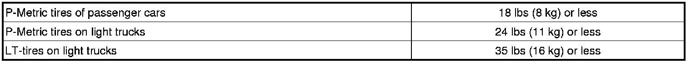
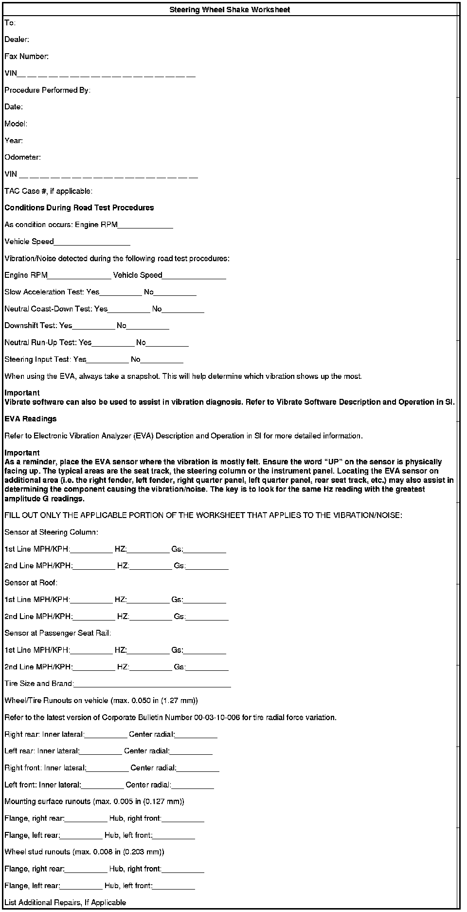

Tires/Wheels - Information on Tire Radial Force Variation (RFV)
INFORMATIONBulletin No.: 00-03-10-006I
Date: January 28, 2013
Subject: Information on Tire Radial Force Variation (RFV)
Models:
2013 and Prior GM Passenger Cars and Light Duty Trucks
Supercede:
This bulletin is being revised to reinforce the importance of performing a wheel centering check on wheel balancers so equipped. Please discard Corporate Bulletin Number 00-03-10-006H (Section 03 - Suspension).
Important:
^ Before measuring tires on GM approved tire force variation measurement equipment, the vehicle MUST be driven a minimum of 24 km (15 mi) to ensure removal of any flat-spotting. Refer to the latest version of Corporate Bulletin Number 03-03-10-007: Tire/Wheel Characteristics of GM Original Equipment Tires.
^ GM approved tire force variation measurement equipment MUST be calibrated prior to measuring tire/wheel assemblies for each vehicle.
Note
If the equipment being used is capable of performing a centering check, the centering check must be completed before taking measurements of balance or RFV.
The purpose of this bulletin is to provide guidance to GM dealers when using GM approved tire force variation measurement equipment. This type of equipment can be a valuable tool in diagnosing vehicle ride concerns. The most common ride concern involving tire radial force variation is highway speed (105-115 km/h (65-70 mph) shake on smooth roads.
Tire related smooth road highway speed shake can be caused by three conditions: imbalance, out of round and tire force variation. These three conditions are not necessarily related. All three conditions must be addressed.
Imbalance is normally addressed first, because it is the simpler of the three to correct. Off-vehicle, two plane dynamic wheel balancers are readily available and can accurately correct imbalance. Balancer calibration and maintenance, proper attachment of the wheel to the balancer, and proper balance weights, are all factors required for a quality balance. However, a perfectly balanced tire/wheel assembly can still be "oval shaped" and cause a vibration.
Before balancing, perform the following procedures.
Tire and Wheel Diagnosis
1. Set the tire pressure to the placard values.
2. With the vehicle raised, ensure the wheels are centered on the hub by loosening all wheel nuts and hand-tightening all nuts first by hand while shaking the wheel, then torque to specifications using a torque wrench, NOT a torque stick.
3. Visually inspect the tires and the wheels. Inspect for evidence of the following conditions and correct as necessary:
^ Missing balance weights
^ Bent rim flange
^ Irregular tire wear
^ Incomplete bead seating
^ Tire irregularities (including pressure settings)
^ Mud/ice build-up in wheel
^ Stones in the tire tread
^ Remove any aftermarket wheels and/or tires and restore vehicle to original condition prior to diagnosing a smooth road shake condition.
4. Road test the vehicle using the Electronic Vibration Analyzer (EVA) essential tool. Drive within posted speed limits at 105-115 km/h (65-70 mph) for a sufficient distance on a known, smooth road surface to duplicate the condition. Determine if the vehicle is sensitive to brake apply. If the brakes are applied lightly and the pulsation felt in the steering wheel increases, refer to the Brakes section of the service manual that deals with brake-induced pulsation. If you can start to hear the vibration as a low boom noise (in addition to feeling it), but cannot see it, the vehicle likely has a first order (one pulse per propshaft revolution) driveline vibration. Driveline first order vibrations are high enough in frequency that most humans can start to hear them at highway speeds, but are too high to be able to be easily seen. These issues can be caused by driveline imbalance or misalignment. If the vehicle exhibits this low boom and the booming pulses in-and-out on a regular basis (like a throbbing), chances are good that the vehicle could have driveline vibration. This type of vibration is normally felt more in the "seat of the pants" than the steering wheel.
5. Next, record the Hertz (Hz) reading as displayed by the EVA onto the tire data worksheet found at the end of this bulletin. This should be done after a tire break-in period of at least 24 km (15 mi) at 72 km/h (45 mph) or greater, in order to eliminate any possible tire flat-spotting. This reading confirms what the vehicle vibration frequency is prior to vehicle service and documents the amount of improvement occurring as the result of the various steps taken to repair. Completing the Steering Wheel Shake Worksheet below is required. A copy of the completed worksheet must be saved with the R.O. and a copy included with any parts returned to the Warranty Parts Center for analysis. A reading of 35 to 50 Hz typically indicates a first order propshaft vibration. If this is the situation, refer to the latest version of Corporate Bulletin Number 08-07-30-044. Generally, a reading between 10 and 20 Hz indicates a tire/wheel vibration and if this is the reading obtained, continue using this bulletin. If the tire 1st order vibration goes away and stays away during this evaluation, the cause is likely tire flat-spotting. Tire flat-spotting vibration may come and go at any speed over 72 km/h (45 mph) during the first 10 minutes of operation, if vibration continues after 10 minutes of driving at speeds greater than 72 km/h (45 mph), tire flat-spotting can be ruled out as the cause for vibration.
6. If flat-spotting is the cause, provide the explanation that this has occurred due to the vehicle being parked for long periods of time and that the nature of the tire is to take a set. Refer to the latest version of Corporate Bulletin Number 03-03-10-007: Information on Tire/Wheel Characteristics (Vibration, Balance, Shake, Flat Spotting) of GM Original Equipment Tires.
7. If the road test indicates a shake/vibration exists, check the imbalance of each tire/wheel assembly on a known, calibrated, off-car dynamic balancer. Make sure the mounting surface of the wheel and the surface of the balancer are absolutely clean and free of debris. Be sure to choose the proper cone/collet for the wheel, and always use the pilot bore for centering. Never center the wheel using the hub-cap bore since it is not a precision machined surface. Perform the centering check if the equipment is capable of a centering check. If any assembly calls for more than 1/4 ounce on either rim flange, remove all balance weights and rebalance to as close to zero as possible. If you can see the vibration (along with feeling it) in the steering wheel (driving straight without your hands on the wheel), it is very likely to be a tire/wheel first order (one pulse per revolution) disturbance. First order disturbances can be caused by imbalance as well as non-uniformities in tires, wheels or hubs. This first order frequency is too low for a human to hear, but if the amplitude is high enough, it can be seen.
If a vibration or shake still exists after balancing, any out of round conditions, of the wheel, and force variation conditions of the tire, must be addressed. GM approved tire force variation measurement equipment can address both (it is also a wheel balancer).
Tire radial force vibration (RFV) can be defined as the amount of stiffness variation the tire will produce in one revolution under a constant load. Radial force variation is what the vehicle feels because the load (weight) of the vehicle is always on the tires. Although free runout of tires (not under load) is not always a good indicator of a smooth ride, it is critical that total tire/wheel assembly runout be within specification.
Tire force variation measurement equipment loads the tire, similar to on the vehicle, and measures radial force variation of the tire/wheel assembly. Note that the wheel is affecting the tire's RFV measurement at this point. To isolate the wheel, its runout must be measured. This can be easily done on GM approved tire force variation measurement equipment, without the need to set up dial indicators. If the wheel meets the runout specification, the tire's RFV can then be addressed.
After measuring the tire/wheel assembly under load, and the wheel alone, the machine then calculates (predicts) the radial force variation of the tire. However, because this is a prediction that can include mounting inaccuracies, and the load wheel is much smaller in diameter than used in tire production, this type of service equipment should NOT be used to audit new tires. Rather, it should be used as a service diagnostic tool to minimize radial force variation of the tire/wheel assembly.
GM approved tire force variation measurement equipment does an excellent job of measuring wheel runout, and of finding the low point of the wheel (for runout) and the high point of the tire (for radial force variation). This allows the tire to be matched mounted to the wheel for lowest tire/wheel assembly force variation.
The machine will simplify this process into easy steps. The following assembly radial force variation numbers should be used as a guide:

When measuring RFV and match mounting tires perform the following steps.
Measuring Wheel Runout and Assembly Radial Force Variation

Important:
The completed worksheet above must be attached to the hard copy of the repair order.
^ Measure radial force variation and radial runout.
^ If a road force/balancing machine is used, record the radial force variation (RFV) on the worksheet at the end of this bulletin. It may be of benefit to have the lowest RFV assembly to the front left corner. If the machine is not available and the EVA data suggests there is an issue, swap the tire and wheel assemblies from the front to the back. Re-check on the EVA and if the problem still exists, test another vehicle to find assemblies that do not exhibit the same frequency. If the subject vehicle exhibits vibration in the seat, then swap only the rear assemblies and see if the problem continues. If the subject vehicle exhibits vibration in the steering wheel, swap only the front assemblies and see if the problem continues. If the subject vehicle continues to vibrate after swapping two assemblies then swap all four. If the vibration still exists, continue below.
^ If a runout/balancing machine is used, record the radial runout of the tire/wheel assemblies on the worksheet. If one or more of the tire/wheel assemblies are more than 0.040 in (1.02 mm), match mount the tire to the wheel to get below 0.040 in (1.02 mm). For sensitive customers, readings of 0.030 inch (0.76 mm) or less are preferable, it may also be of benefit to have the lowest runout assembly to the front left corner. If the machine is not available and the EVA data suggests there is an issue, swap the tire and wheel assemblies from the front to the back. Re-check on the EVA and if the problem still exists, test another vehicle to find tires that do not exhibit the same frequency and swap those tires onto the subject vehicle.
^ After match mounting, the tire/wheel assembly must be rebalanced.
If match mounting tires to in-spec wheels produces assembly values higher than these, tire replacement may be necessary. Replacing tires at lower values will probably mean good tires are being condemned.
Because tires can sometimes become temporarily flat-spotted, which will affect force variation, it is important that the vehicle be driven at least 24 km (15 mi) prior to measuring. Tire pressure must also be adjusted to the usage pressure on the vehicle's tire placard prior to measuring.
Most GM vehicles will tolerate radial force variation up to these levels. However, some vehicles are more sensitive, and may require lower levels. Also, there are other tire parameters that GM approved tire force variation measurement equipment cannot measure that may be a factor. In such cases, TAC should be contacted for further instructions.
Important:
^ When mounting a GM wheel to a wheel balancer/force variation machine, always use the wheel's center pilot hole. This is the primary centering mechanism on all GM wheels; the bolt holes are secondary. Usually a back cone method to the machine should be used. For added accuracy and repeatability, a flange plate should be used to clamp the wheel onto the cone and machine. This system is offered by all balancer manufacturers in GM's dealer program.
^ Any type of service equipment that removes tread rubber by grinding, buffing or truing is NOT recommended, and may void the tire warranty. However, tires may have been ground by the tire company as part of their tire manufacturing process. This is a legitimate procedure.
^ If the equipment being used is capable of performing a centering check, the centering check must be completed before taking measurements of balance or RFV.
Steering Wheel Shake Worksheet
When diagnosing vibration concerns, use the following worksheet in conjunction with the appropriate Vibration Analysis-Road testing procedure in the Vibration Correction sub-section in SI.
Refer to the appropriate section of SI for specifications and repair procedures that are related to the vibration concern.

Disclaimer